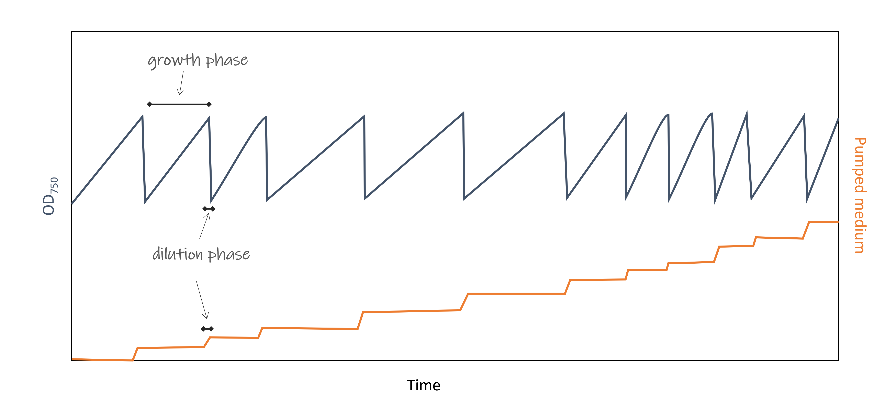
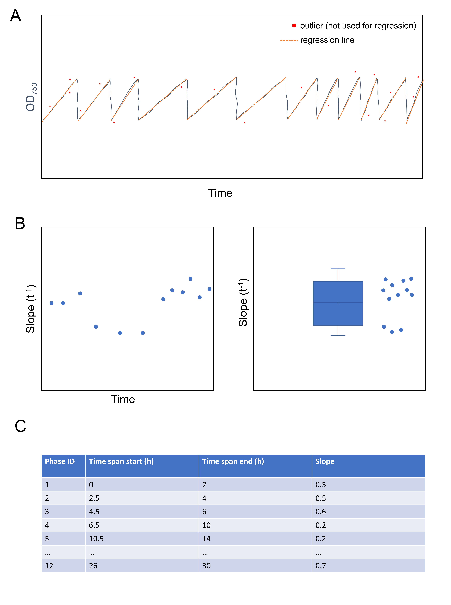
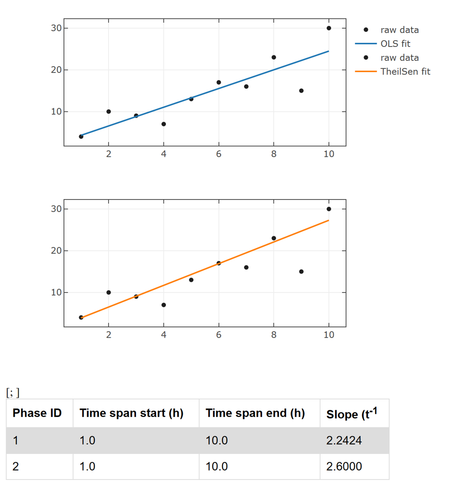

-
The bioreactor in the department of Biotechnology and Systems Biology contains eight individual growth cells that contain the green algae Chlamydomonas reinhardtii. Every minute a measurement of the
optical density is taken (680 and 750 nm). The reactor operates in turbidostatic mode, indicating that the cells density should be kept constant. If the cells grow, the optical density increases and the
reactor has to dilute the growth medium to restore a constant OD750. Please note, that for photosynthetic active organisms it is recommended to use OD750, because OD680 lies within the chlorophyll
autofluorescence and therefore may be biased if the photosynthesis apparatus changes during the time course of the experiment. It would be interesting to see the differences that are present between 680 and 750.
-
The manual process of analysing the data is quite cumbersome. The exported data set constists of (i) time, (ii) measured OD, and (iii) the activity of the dilution pump. To analyse the growth, the slope of the growth
phase OD is required. Therefore, the data is loaded in MS-Excel, the growth phases are manually selected (usually between 0.36 - 0.44), then ln transformed, and individually fitted with a straight regression line. The slope of these lines are then used to get an
estimate of the average growth rate (inverse slope).

_Fig. 1: Schematic view of the data. The saw tooth signals has to be separated into distinct growth-phases. The slope of these lines can be used to estimate the growth rate. The growth changes during the experiment as the slope is lower in the center three growth phases (e.g. the light was turned off and the cells grow slower)._
-
The aim of this project is to automate this process. A possible solution to this problem is the following:
- input: CSV, TXT, or TSV file in which column 1 and 2 contains time data, column 3 the OD, and column 4 the pump data
- output: Plotly figure that contains all necessary information to (i) perform a visual quality check of the analysis performace, and (2) further determine growth.
0.00000 |
- |
0.0 |
0.01667 |
0.660 |
- |
0.03333 |
0.656 |
- |
0.05000 |
0.650 |
- |
0.06667 |
0.661 |
- |
0.08333 |
- |
0.0 |
0.10000 |
0.658 |
- |
0.11667 |
0.662 |
- |
0.13333 |
- |
0.1 |
The input data can be accessed here:

_Fig. 2: A possible visual solution_
-
start by developing in a jupyter notebook or fsx script. The automatic analysis can be realized afterwards by creating a script, that takes a predefined data set that is stored e.g. at the same location as the script.
The output plot can be stored in the same folder with the name containing the current date. In the end you can create a file named "analysis.cmd" and that just contains "dotnet fsi analysisScriptName.fsx". By double clicking
this file, you start the complete analysis workflow without the need to open any script or do any programming at all.
-
The measurements from pump volume and the OD measurements were not performed at the same time points. Therefore some values may be empty! Create two
collections (pump data and od data respectively).
-
After import, first define the growth phases using the pump data. Whenever this data is constant over a long period its a growth phase.
When the pump starts diluting again the growth phase ended.
- With these intervals from the pump data you can partition the OD data into the respective subintervals. These can be used for fitting
-
There are various options to fit a line to the data:
General usage: https://fslab.org/FSharp.Stats/Fitting.html
-
(i) Use simple linear regression where the squared distances from the fit to the original data points (residuals) are minimized (OLS regression).
The drawback is, that outlier values have a huge impact to the fitting line. LinearRegression.fit(testDataX, testDataY, FittingMethod = Method.SimpleLinear)
-
(ii) You can use outlier insensitive slope determination methods (e.g. Theil-Sen estimator).
The drawback is, that outlier values have a huge impact to the fitting line. LinearRegression.fit(testDataX, testDataY, FittingMethod = Method.Robust RobustEstimator.TheilSen)
-
(iii) Use simple linear regression but remove outliers after the initial fit and fit again ignoring the outliers.
e.g. use cooks distance for outlier detection
-
Use Plotly.NET for visualization
For the BoxPlot you can use Chart.BoxPlot(Y = [2.;3.4], Name = "slopes",Jitter=0.2,BoxPoints=StyleParam.BoxPoints.All,BoxMean=StyleParam.BoxMean.True) to additionally view all data points and the data mean.
The following plotting example contains much of the functionality you'll need, but not necessarily in the correct position. I would suggest for each fitting strategy (OLS, robust, ...) to generate an individual output plot.
#r "nuget: FSharp.Stats, 0.5.0"
#r "nuget: Plotly.NET, 4.2.0"
open FSharp.Stats
open Plotly.NET
open FSharp.Stats.Fitting
// defining data to be fitted with a straight line
let xs = vector [|1. .. 10.|]
let ys = vector [|4.;10.;9.;7.;13.;17.;16.;23.;15.;30.|]
// OLS simple linear regression
let fitA = Fitting.LinearRegression.fit(xs,ys,FittingMethod=Fitting.Method.SimpleLinear)
// robust regression
let fitB = Fitting.LinearRegression.fit(xs,ys,FittingMethod=Fitting.Method.Robust RobustEstimator.TheilSen)
/// this code section is just for the creation of an HTML table that is displayed below
/// the chart itself. You also can use Plotly tables https://plotly.net/simple-charts/table.html
let description =
// some styling for a html table
let style = "<style>table {font-family: arial, sans-serif;border-collapse: collapse;width: 75%;}td, th {border: 1px solid #dddddd;text-align: left;padding: 8px;}tr:nth-child(even) {background-color: #dddddd;}</style>"
// header row of the table
let header = "<tr><th>Phase ID</th><th>Time span start (h)</th><th>Time span end (h)</th><th>Slope (t<sup>-1</sup></th></tr>"
// table rows
let rows =
[fitA;fitB]
|> List.mapi (fun i x ->
// create a table row with phase id, the start and end of the treatment formatted as a float with one significant figure (defined by %.1f) and the slope with four significant figures.
// the slope is stored within the fit coefficients as [intersect;slope]
$"<tr><td>{i + 1}</td><td>%.1f{Seq.head xs}</td><td>%.1f{Seq.last xs}</td><td>%.4f{x.Coefficients.[1]}</td></tr>"
)
// constructed table
let table = $"{style}<table>{header}{rows}</table>"
// convert the table string to a giraffe node element to be compatible with Plotly.NET
Giraffe.ViewEngine.HtmlElements.rawText table
// the chart contains 2 charts in two rows. Every chart contains the raw data and the fitting line
let chart =
[
[
Chart.Point(x=xs,y=ys,Name="raw data",MarkerColor=Color.fromHex "#1e1e1e")
Chart.Line(x=[1.;10.],y=[fitA.Predict 1.;fitA.Predict 10.;],Name="OLS fit",LineColor=Color.fromHex "#1f77b4")
]
|> Chart.combine
[
Chart.Point(x=xs,y=ys,Name="raw data",MarkerColor=Color.fromHex "#1e1e1e")
Chart.Line(x=[1.;10.],y=[fitB.Predict 1.;fitB.Predict 10.;],Name="TheilSen fit",LineColor=Color.fromHex "#ff7f0e")
]
|> Chart.combine
]
// chart should be displayed as 2x1 matrix
|> Chart.Grid(nRows=2,nCols=1)
// some styling template
|> Chart.withTemplate ChartTemplates.lightMirrored
// this is a configuration that you can download the figure as SVG file
|> Chart.withConfig (
Config.init (ToImageButtonOptions = ConfigObjects.ToImageButtonOptions.init(Format = StyleParam.ImageFormat.SVG))
)
// here the table is added as HTML description
|> Chart.withDescription [description]
chart
|> GenericChart.toChartHTML
No value returned by any evaluator
|

Fig. 3: Example of Plotly.NET combined graphs
Multiple items
namespace FSharp
--------------------
namespace Microsoft.FSharp
namespace FSharp.Stats
namespace Plotly
namespace Plotly.NET
namespace FSharp.Stats.Fitting
val xs : Vector<float>
Multiple items
val vector : l:seq<float> -> Vector<float>
--------------------
type vector = Vector<float>
val ys : Vector<float>
val fitA : LinearRegression.Coefficients
Multiple items
module LinearRegression
from FSharp.Stats.Fitting
<summary>
Linear regression is used to estimate the relationship of one variable (y) with another (x) by expressing y in terms of a linear function of x.
</summary>
--------------------
type LinearRegression =
new : unit -> LinearRegression
static member fit : xData:vector * yData:Vector<float> * ?FittingMethod:Method * ?Constraint:Constraint<float * float> * ?Weighting:vector -> Coefficients + 1 overload
static member predict : coeff:Coefficients -> ('a0 -> float)
<summary>
This LinearRegression type summarized the most common fitting procedures.
</summary>
<returns>Either linear regression coefficients or a prediction function to map x values/vectors to its corresponding y value.</returns>
<example><code>
// e.g. days since experiment start
let xData = vector [|1. .. 100.|]
// e.g. plant size in cm
let yData = vector [|4.;7.;8.;9.;7.;11.; ...|]
// Estimate the intercept and slope of a line, that fits the data.
let coefficientsSimpleLinear =
LinearRegression.fit(xData,yData,FittingMethod=Fitting.Method.SimpleLinear,Constraint=Fitting.Constraint.RegressionThroughOrigin)
// Predict the size on day 10.5
LinearRegression.predict(coefficientsSimpleLinear) 10.5
</code></example>
--------------------
new : unit -> LinearRegression
static member LinearRegression.fit : xData:matrix * yData:Vector<float> * ?FittingMethod:Method -> LinearRegression.Coefficients
static member LinearRegression.fit : xData:vector * yData:Vector<float> * ?FittingMethod:Method * ?Constraint:Constraint<float * float> * ?Weighting:vector -> LinearRegression.Coefficients
type Method =
| SimpleLinear
| Polynomial of int
| Robust of RobustEstimator
<summary>
Defines regression method.
</summary>
union case Method.SimpleLinear: Method
<summary>Fits a straight line through two-, or multidimensional data (OLS).</summary>
val fitB : LinearRegression.Coefficients
union case Method.Robust: RobustEstimator -> Method
<summary>Fits an outlier-insensitive straight line through twodimensional data (NOT OLS).</summary>
type RobustEstimator =
| Theil
| TheilSen
<summary>
Defines method of slope estimation for robust line regression.
</summary>
union case RobustEstimator.TheilSen: RobustEstimator
<summary>Theil Sen estimator</summary>
val description : Giraffe.ViewEngine.HtmlElements.XmlNode
this code section is just for the creation of an HTML table that is displayed below
the chart itself. You also can use Plotly tables https://plotly.net/simple-charts/table.html
val style : string
val header : string
val rows : string list
Multiple items
module List
from FSharp.Stats
<summary>
Module to compute common statistical measure on list
</summary>
--------------------
module List
from Microsoft.FSharp.Collections
<summary>Contains operations for working with values of type <see cref="T:Microsoft.FSharp.Collections.list`1" />.</summary>
<namespacedoc><summary>Operations for collections such as lists, arrays, sets, maps and sequences. See also
<a href="https://docs.microsoft.com/dotnet/fsharp/language-reference/fsharp-collection-types">F# Collection Types</a> in the F# Language Guide.
</summary></namespacedoc>
--------------------
type List =
new : unit -> List
static member geomspace : start:float * stop:float * num:int * ?IncludeEndpoint:bool -> float list
static member linspace : start:float * stop:float * num:int * ?IncludeEndpoint:bool -> float list
--------------------
type List<'T> =
| ( [] )
| ( :: ) of Head: 'T * Tail: 'T list
interface IReadOnlyList<'T>
interface IReadOnlyCollection<'T>
interface IEnumerable
interface IEnumerable<'T>
member GetReverseIndex : rank:int * offset:int -> int
member GetSlice : startIndex:int option * endIndex:int option -> 'T list
static member Cons : head:'T * tail:'T list -> 'T list
member Head : 'T
member IsEmpty : bool
member Item : index:int -> 'T with get
...
<summary>The type of immutable singly-linked lists.</summary>
<remarks>Use the constructors <c>[]</c> and <c>::</c> (infix) to create values of this type, or
the notation <c>[1;2;3]</c>. Use the values in the <c>List</c> module to manipulate
values of this type, or pattern match against the values directly.
</remarks>
<exclude />
--------------------
new : unit -> List
val mapi : mapping:(int -> 'T -> 'U) -> list:'T list -> 'U list
<summary>Builds a new collection whose elements are the results of applying the given function
to each of the elements of the collection. The integer index passed to the
function indicates the index (from 0) of element being transformed.</summary>
<param name="mapping">The function to transform elements and their indices.</param>
<param name="list">The input list.</param>
<returns>The list of transformed elements.</returns>
val i : int
val x : LinearRegression.Coefficients
Multiple items
module Seq
from FSharp.Stats
<summary>
Module to compute common statistical measure
</summary>
--------------------
module Seq
from Microsoft.FSharp.Collections
<summary>Contains operations for working with values of type <see cref="T:Microsoft.FSharp.Collections.seq`1" />.</summary>
--------------------
type Seq =
new : unit -> Seq
static member geomspace : start:float * stop:float * num:int * ?IncludeEndpoint:bool -> seq<float>
static member linspace : start:float * stop:float * num:int * ?IncludeEndpoint:bool -> seq<float>
--------------------
new : unit -> Seq
val head : source:seq<'T> -> 'T
<summary>Returns the first element of the sequence.</summary>
<param name="source">The input sequence.</param>
<returns>The first element of the sequence.</returns>
<exception cref="T:System.ArgumentNullException">Thrown when the input sequence is null.</exception>
<exception cref="T:System.ArgumentException">Thrown when the input does not have any elements.</exception>
val table : string
namespace Giraffe
namespace Giraffe.ViewEngine
module HtmlElements
from Giraffe.ViewEngine
val rawText : content:string -> Giraffe.ViewEngine.HtmlElements.XmlNode
<summary>
The `rawText` function will create an object of type `XmlNode` where the content will be rendered in its original form (without encoding).
**Special Notice**
Please be aware that the the usage of `rawText` is mainly designed for edge cases where someone would purposefully want to inject HTML (or JavaScript) code into a rendered view. If not used carefully this could potentially lead to serious security vulnerabilities and therefore should be used only when explicitly required.
Most cases and particularly any user provided content should always be output via the `encodedText` function.
</summary>
val chart : GenericChart.GenericChart
type Chart =
static member AnnotatedHeatmap : zData:seq<#seq<'a1>> * annotationText:seq<#seq<string>> * ?Name:string * ?ShowLegend:bool * ?Opacity:float * ?X:seq<'a3> * ?MultiX:seq<seq<'a3>> * ?XGap:int * ?Y:seq<'a4> * ?MultiY:seq<seq<'a4>> * ?YGap:int * ?Text:'a5 * ?MultiText:seq<'a5> * ?ColorBar:ColorBar * ?ColorScale:Colorscale * ?ShowScale:bool * ?ReverseScale:bool * ?ZSmooth:SmoothAlg * ?Transpose:bool * ?UseWebGL:bool * ?ReverseYAxis:bool * ?UseDefaults:bool -> GenericChart (requires 'a1 :> IConvertible and 'a3 :> IConvertible and 'a4 :> IConvertible and 'a5 :> IConvertible) + 1 overload
static member Area : x:seq<#IConvertible> * y:seq<#IConvertible> * ?ShowMarkers:bool * ?Name:string * ?ShowLegend:bool * ?Opacity:float * ?MultiOpacity:seq<float> * ?Text:'a2 * ?MultiText:seq<'a2> * ?TextPosition:TextPosition * ?MultiTextPosition:seq<TextPosition> * ?MarkerColor:Color * ?MarkerColorScale:Colorscale * ?MarkerOutline:Line * ?MarkerSymbol:MarkerSymbol * ?MultiMarkerSymbol:seq<MarkerSymbol> * ?Marker:Marker * ?LineColor:Color * ?LineColorScale:Colorscale * ?LineWidth:float * ?LineDash:DrawingStyle * ?Line:Line * ?AlignmentGroup:string * ?OffsetGroup:string * ?StackGroup:string * ?Orientation:Orientation * ?GroupNorm:GroupNorm * ?FillColor:Color * ?FillPatternShape:PatternShape * ?FillPattern:Pattern * ?UseWebGL:bool * ?UseDefaults:bool -> GenericChart (requires 'a2 :> IConvertible) + 1 overload
static member Bar : values:seq<#IConvertible> * ?Keys:seq<'a1> * ?MultiKeys:seq<seq<'a1>> * ?Name:string * ?ShowLegend:bool * ?Opacity:float * ?MultiOpacity:seq<float> * ?Text:'a2 * ?MultiText:seq<'a2> * ?MarkerColor:Color * ?MarkerColorScale:Colorscale * ?MarkerOutline:Line * ?MarkerPatternShape:PatternShape * ?MultiMarkerPatternShape:seq<PatternShape> * ?MarkerPattern:Pattern * ?Marker:Marker * ?Base:#IConvertible * ?Width:'a4 * ?MultiWidth:seq<'a4> * ?TextPosition:TextPosition * ?MultiTextPosition:seq<TextPosition> * ?UseDefaults:bool -> GenericChart (requires 'a1 :> IConvertible and 'a2 :> IConvertible and 'a4 :> IConvertible) + 1 overload
static member BoxPlot : ?X:seq<'a0> * ?MultiX:seq<seq<'a0>> * ?Y:seq<'a1> * ?MultiY:seq<seq<'a1>> * ?Name:string * ?ShowLegend:bool * ?Text:'a2 * ?MultiText:seq<'a2> * ?FillColor:Color * ?MarkerColor:Color * ?Marker:Marker * ?Opacity:float * ?WhiskerWidth:float * ?BoxPoints:BoxPoints * ?BoxMean:BoxMean * ?Jitter:float * ?PointPos:float * ?Orientation:Orientation * ?OutlineColor:Color * ?OutlineWidth:float * ?Outline:Line * ?AlignmentGroup:string * ?OffsetGroup:string * ?Notched:bool * ?NotchWidth:float * ?QuartileMethod:QuartileMethod * ?UseDefaults:bool -> GenericChart (requires 'a0 :> IConvertible and 'a1 :> IConvertible and 'a2 :> IConvertible) + 2 overloads
static member Bubble : x:seq<#IConvertible> * y:seq<#IConvertible> * sizes:seq<int> * ?Name:string * ?ShowLegend:bool * ?Opacity:float * ?MultiOpacity:seq<float> * ?Text:'a2 * ?MultiText:seq<'a2> * ?TextPosition:TextPosition * ?MultiTextPosition:seq<TextPosition> * ?MarkerColor:Color * ?MarkerColorScale:Colorscale * ?MarkerOutline:Line * ?MarkerSymbol:MarkerSymbol * ?MultiMarkerSymbol:seq<MarkerSymbol> * ?Marker:Marker * ?LineColor:Color * ?LineColorScale:Colorscale * ?LineWidth:float * ?LineDash:DrawingStyle * ?Line:Line * ?AlignmentGroup:string * ?OffsetGroup:string * ?StackGroup:string * ?Orientation:Orientation * ?GroupNorm:GroupNorm * ?UseWebGL:bool * ?UseDefaults:bool -> GenericChart (requires 'a2 :> IConvertible) + 1 overload
static member Candlestick : open:seq<#IConvertible> * high:seq<#IConvertible> * low:seq<#IConvertible> * close:seq<#IConvertible> * ?X:seq<'a4> * ?MultiX:seq<seq<'a4>> * ?Name:string * ?ShowLegend:bool * ?Opacity:float * ?Text:'a5 * ?MultiText:seq<'a5> * ?Line:Line * ?IncreasingColor:Color * ?Increasing:FinanceMarker * ?DecreasingColor:Color * ?Decreasing:FinanceMarker * ?WhiskerWidth:float * ?ShowXAxisRangeSlider:bool * ?UseDefaults:bool -> GenericChart (requires 'a4 :> IConvertible and 'a5 :> IConvertible) + 2 overloads
static member Column : values:seq<#IConvertible> * ?Keys:seq<'a1> * ?MultiKeys:seq<seq<'a1>> * ?Name:string * ?ShowLegend:bool * ?Opacity:float * ?MultiOpacity:seq<float> * ?Text:'a2 * ?MultiText:seq<'a2> * ?MarkerColor:Color * ?MarkerColorScale:Colorscale * ?MarkerOutline:Line * ?MarkerPatternShape:PatternShape * ?MultiMarkerPatternShape:seq<PatternShape> * ?MarkerPattern:Pattern * ?Marker:Marker * ?Base:#IConvertible * ?Width:'a4 * ?MultiWidth:seq<'a4> * ?TextPosition:TextPosition * ?MultiTextPosition:seq<TextPosition> * ?UseDefaults:bool -> GenericChart (requires 'a1 :> IConvertible and 'a2 :> IConvertible and 'a4 :> IConvertible) + 1 overload
static member Contour : zData:seq<#seq<'a1>> * ?Name:string * ?ShowLegend:bool * ?Opacity:float * ?X:seq<'a2> * ?MultiX:seq<seq<'a2>> * ?Y:seq<'a3> * ?MultiY:seq<seq<'a3>> * ?Text:'a4 * ?MultiText:seq<'a4> * ?ColorBar:ColorBar * ?ColorScale:Colorscale * ?ShowScale:bool * ?ReverseScale:bool * ?Transpose:bool * ?ContourLineColor:Color * ?ContourLineDash:DrawingStyle * ?ContourLineSmoothing:float * ?ContourLine:Line * ?ContoursColoring:ContourColoring * ?ContoursOperation:ConstraintOperation * ?ContoursType:ContourType * ?ShowContourLabels:bool * ?ContourLabelFont:Font * ?Contours:Contours * ?FillColor:Color * ?NContours:int * ?UseDefaults:bool -> GenericChart (requires 'a1 :> IConvertible and 'a2 :> IConvertible and 'a3 :> IConvertible and 'a4 :> IConvertible)
static member Funnel : x:seq<#IConvertible> * y:seq<#IConvertible> * ?Name:string * ?ShowLegend:bool * ?Opacity:float * ?Width:float * ?Offset:float * ?Text:'a2 * ?MultiText:seq<'a2> * ?TextPosition:TextPosition * ?MultiTextPosition:seq<TextPosition> * ?Orientation:Orientation * ?AlignmentGroup:string * ?OffsetGroup:string * ?MarkerColor:Color * ?MarkerOutline:Line * ?Marker:Marker * ?TextInfo:TextInfo * ?ConnectorLineColor:Color * ?ConnectorLineStyle:DrawingStyle * ?ConnectorFillColor:Color * ?ConnectorLine:Line * ?Connector:FunnelConnector * ?InsideTextFont:Font * ?OutsideTextFont:Font * ?UseDefaults:bool -> GenericChart (requires 'a2 :> IConvertible)
static member Heatmap : zData:seq<#seq<'a1>> * ?X:seq<'a2> * ?MultiX:seq<seq<'a2>> * ?Y:seq<'a3> * ?MultiY:seq<seq<'a3>> * ?Name:string * ?ShowLegend:bool * ?Opacity:float * ?XGap:int * ?YGap:int * ?Text:'a4 * ?MultiText:seq<'a4> * ?ColorBar:ColorBar * ?ColorScale:Colorscale * ?ShowScale:bool * ?ReverseScale:bool * ?ZSmooth:SmoothAlg * ?Transpose:bool * ?UseWebGL:bool * ?ReverseYAxis:bool * ?UseDefaults:bool -> GenericChart (requires 'a1 :> IConvertible and 'a2 :> IConvertible and 'a3 :> IConvertible and 'a4 :> IConvertible) + 1 overload
...
static member Chart.Point : xy:seq<#System.IConvertible * #System.IConvertible> * ?Name:string * ?ShowLegend:bool * ?Opacity:float * ?MultiOpacity:seq<float> * ?Text:'a2 * ?MultiText:seq<'a2> * ?TextPosition:StyleParam.TextPosition * ?MultiTextPosition:seq<StyleParam.TextPosition> * ?MarkerColor:Color * ?MarkerColorScale:StyleParam.Colorscale * ?MarkerOutline:Line * ?MarkerSymbol:StyleParam.MarkerSymbol * ?MultiMarkerSymbol:seq<StyleParam.MarkerSymbol> * ?Marker:TraceObjects.Marker * ?AlignmentGroup:string * ?OffsetGroup:string * ?StackGroup:string * ?Orientation:StyleParam.Orientation * ?GroupNorm:StyleParam.GroupNorm * ?UseWebGL:bool * ?UseDefaults:bool -> GenericChart.GenericChart (requires 'a2 :> System.IConvertible)
static member Chart.Point : x:seq<#System.IConvertible> * y:seq<#System.IConvertible> * ?Name:string * ?ShowLegend:bool * ?Opacity:float * ?MultiOpacity:seq<float> * ?Text:'c * ?MultiText:seq<'c> * ?TextPosition:StyleParam.TextPosition * ?MultiTextPosition:seq<StyleParam.TextPosition> * ?MarkerColor:Color * ?MarkerColorScale:StyleParam.Colorscale * ?MarkerOutline:Line * ?MarkerSymbol:StyleParam.MarkerSymbol * ?MultiMarkerSymbol:seq<StyleParam.MarkerSymbol> * ?Marker:TraceObjects.Marker * ?AlignmentGroup:string * ?OffsetGroup:string * ?StackGroup:string * ?Orientation:StyleParam.Orientation * ?GroupNorm:StyleParam.GroupNorm * ?UseWebGL:bool * ?UseDefaults:bool -> GenericChart.GenericChart (requires 'c :> System.IConvertible)
argument x: seq<float>
<summary>
Creates a Point chart, which uses Points in a 2D space to visualize data.
</summary>
<param name="x">Sets the x coordinates of the plotted data.</param>
<param name="y">Sets the y coordinates of the plotted data.</param>
<param name="Name">Sets the trace name. The trace name appear as the legend item and on hover</param>
<param name="ShowLegend">Determines whether or not an item corresponding to this trace is shown in the legend.</param>
<param name="Opacity">Sets the opactity of the trace</param>
<param name="MultiOpacity">Sets the opactity of individual datum markers</param>
<param name="Text">Sets a text associated with each datum</param>
<param name="MultiText">Sets individual text for each datum</param>
<param name="TextPosition">Sets the position of text associated with each datum</param>
<param name="MultiTextPosition">Sets the position of text associated with individual datum</param>
<param name="MarkerColor">Sets the color of the marker</param>
<param name="MarkerColorScale">Sets the colorscale of the marker</param>
<param name="MarkerOutline">Sets the outline of the marker</param>
<param name="MarkerSymbol">Sets the marker symbol for each datum</param>
<param name="MultiMarkerSymbol">Sets the marker symbol for each individual datum</param>
<param name="Marker">Sets the marker (use this for more finegrained control than the other marker-associated arguments)</param>
<param name="AlignmentGroup">Set several traces linked to the same position axis or matching axes to the same alignmentgroup. This controls whether bars compute their positional range dependently or independently.</param>
<param name="OffsetGroup">Set several traces linked to the same position axis or matching axes to the same offsetgroup where bars of the same position coordinate will line up.</param>
<param name="StackGroup">Set several traces (on the same subplot) to the same stackgroup in order to add their y values (or their x values if `Orientation` is Horizontal). Stacking also turns `fill` on by default and sets the default `mode` to "lines" irrespective of point count. ou can only stack on a numeric (linear or log) axis. Traces in a `stackgroup` will only fill to (or be filled to) other traces in the same group. With multiple `stackgroup`s or some traces stacked and some not, if fill-linked traces are not already consecutive, the later ones will be pushed down in the drawing order</param>
<param name="Orientation">Sets the stacking direction. Only relevant when `stackgroup` is used, and only the first `orientation` found in the `stackgroup` will be used.</param>
<param name="GroupNorm">Sets the normalization for the sum of this `stackgroup. Only relevant when `stackgroup` is used, and only the first `groupnorm` found in the `stackgroup` will be used</param>
<param name="UseWebGL">If true, plotly.js will use the WebGL engine to render this chart. use this when you want to render many objects at once.</param>
<param name="UseDefaults">If set to false, ignore the global default settings set in `Defaults`</param>
argument y: seq<float>
<summary>
Creates a Point chart, which uses Points in a 2D space to visualize data.
</summary>
<param name="x">Sets the x coordinates of the plotted data.</param>
<param name="y">Sets the y coordinates of the plotted data.</param>
<param name="Name">Sets the trace name. The trace name appear as the legend item and on hover</param>
<param name="ShowLegend">Determines whether or not an item corresponding to this trace is shown in the legend.</param>
<param name="Opacity">Sets the opactity of the trace</param>
<param name="MultiOpacity">Sets the opactity of individual datum markers</param>
<param name="Text">Sets a text associated with each datum</param>
<param name="MultiText">Sets individual text for each datum</param>
<param name="TextPosition">Sets the position of text associated with each datum</param>
<param name="MultiTextPosition">Sets the position of text associated with individual datum</param>
<param name="MarkerColor">Sets the color of the marker</param>
<param name="MarkerColorScale">Sets the colorscale of the marker</param>
<param name="MarkerOutline">Sets the outline of the marker</param>
<param name="MarkerSymbol">Sets the marker symbol for each datum</param>
<param name="MultiMarkerSymbol">Sets the marker symbol for each individual datum</param>
<param name="Marker">Sets the marker (use this for more finegrained control than the other marker-associated arguments)</param>
<param name="AlignmentGroup">Set several traces linked to the same position axis or matching axes to the same alignmentgroup. This controls whether bars compute their positional range dependently or independently.</param>
<param name="OffsetGroup">Set several traces linked to the same position axis or matching axes to the same offsetgroup where bars of the same position coordinate will line up.</param>
<param name="StackGroup">Set several traces (on the same subplot) to the same stackgroup in order to add their y values (or their x values if `Orientation` is Horizontal). Stacking also turns `fill` on by default and sets the default `mode` to "lines" irrespective of point count. ou can only stack on a numeric (linear or log) axis. Traces in a `stackgroup` will only fill to (or be filled to) other traces in the same group. With multiple `stackgroup`s or some traces stacked and some not, if fill-linked traces are not already consecutive, the later ones will be pushed down in the drawing order</param>
<param name="Orientation">Sets the stacking direction. Only relevant when `stackgroup` is used, and only the first `orientation` found in the `stackgroup` will be used.</param>
<param name="GroupNorm">Sets the normalization for the sum of this `stackgroup. Only relevant when `stackgroup` is used, and only the first `groupnorm` found in the `stackgroup` will be used</param>
<param name="UseWebGL">If true, plotly.js will use the WebGL engine to render this chart. use this when you want to render many objects at once.</param>
<param name="UseDefaults">If set to false, ignore the global default settings set in `Defaults`</param>
type Color =
private new : obj:obj -> Color
override Equals : other:obj -> bool
override GetHashCode : unit -> int
static member fromARGB : a:int -> r:int -> g:int -> b:int -> Color
static member fromColorScaleValues : c:seq<#IConvertible> -> Color
static member fromColors : c:seq<Color> -> Color
static member fromHex : s:string -> Color
static member fromKeyword : c:ColorKeyword -> Color
static member fromRGB : r:int -> g:int -> b:int -> Color
static member fromString : c:string -> Color
...
<summary>
Plotly color can be a single color, a sequence of colors, or a sequence of numeric values referencing the color of the colorscale obj
</summary>
static member Color.fromHex : s:string -> Color
static member Chart.Line : xy:seq<#System.IConvertible * #System.IConvertible> * ?ShowMarkers:bool * ?Name:string * ?ShowLegend:bool * ?Opacity:float * ?MultiOpacity:seq<float> * ?Text:'a2 * ?MultiText:seq<'a2> * ?TextPosition:StyleParam.TextPosition * ?MultiTextPosition:seq<StyleParam.TextPosition> * ?MarkerColor:Color * ?MarkerColorScale:StyleParam.Colorscale * ?MarkerOutline:Line * ?MarkerSymbol:StyleParam.MarkerSymbol * ?MultiMarkerSymbol:seq<StyleParam.MarkerSymbol> * ?Marker:TraceObjects.Marker * ?LineColor:Color * ?LineColorScale:StyleParam.Colorscale * ?LineWidth:float * ?LineDash:StyleParam.DrawingStyle * ?Line:Line * ?AlignmentGroup:string * ?OffsetGroup:string * ?StackGroup:string * ?Orientation:StyleParam.Orientation * ?GroupNorm:StyleParam.GroupNorm * ?Fill:StyleParam.Fill * ?FillColor:Color * ?FillPattern:TraceObjects.Pattern * ?UseWebGL:bool * ?UseDefaults:bool -> GenericChart.GenericChart (requires 'a2 :> System.IConvertible)
static member Chart.Line : x:seq<#System.IConvertible> * y:seq<#System.IConvertible> * ?ShowMarkers:bool * ?Name:string * ?ShowLegend:bool * ?Opacity:float * ?MultiOpacity:seq<float> * ?Text:'c * ?MultiText:seq<'c> * ?TextPosition:StyleParam.TextPosition * ?MultiTextPosition:seq<StyleParam.TextPosition> * ?MarkerColor:Color * ?MarkerColorScale:StyleParam.Colorscale * ?MarkerOutline:Line * ?MarkerSymbol:StyleParam.MarkerSymbol * ?MultiMarkerSymbol:seq<StyleParam.MarkerSymbol> * ?Marker:TraceObjects.Marker * ?LineColor:Color * ?LineColorScale:StyleParam.Colorscale * ?LineWidth:float * ?LineDash:StyleParam.DrawingStyle * ?Line:Line * ?AlignmentGroup:string * ?OffsetGroup:string * ?StackGroup:string * ?Orientation:StyleParam.Orientation * ?GroupNorm:StyleParam.GroupNorm * ?Fill:StyleParam.Fill * ?FillColor:Color * ?FillPattern:TraceObjects.Pattern * ?UseWebGL:bool * ?UseDefaults:bool -> GenericChart.GenericChart (requires 'c :> System.IConvertible)
argument x: seq<float>
<summary> Creates a Line chart, which uses a Line plotted between the given datums in a 2D space to visualize typically an evolution of Y depending on X.</summary>
<param name="x">Sets the x coordinates of the plotted data.</param>
<param name="y">Sets the y coordinates of the plotted data.</param>
<param name="ShowMarkers">Whether to show markers for the individual data points</param>
<param name="Name">Sets the trace name. The trace name appear as the legend item and on hover</param>
<param name="ShowLegend">Determines whether or not an item corresponding to this trace is shown in the legend.</param>
<param name="Opacity">Sets the opactity of the trace</param>
<param name="MultiOpacity">Sets the opactity of individual datum markers</param>
<param name="Text">Sets a text associated with each datum</param>
<param name="MultiText">Sets individual text for each datum</param>
<param name="TextPosition">Sets the position of text associated with each datum</param>
<param name="MultiTextPosition">Sets the position of text associated with individual datum</param>
<param name="MarkerColor">Sets the color of the marker</param>
<param name="MarkerColorScale">Sets the colorscale of the marker</param>
<param name="MarkerOutline">Sets the outline of the marker</param>
<param name="MarkerSymbol">Sets the marker symbol for each datum</param>
<param name="MultiMarkerSymbol">Sets the marker symbol for each individual datum</param>
<param name="Marker">Sets the marker (use this for more finegrained control than the other marker-associated arguments)</param>
<param name="LineColor">Sets the color of the line</param>
<param name="LineColorScale">Sets the colorscale of the line</param>
<param name="LineWidth">Sets the width of the line</param>
<param name="LineDash">sets the drawing style of the line</param>
<param name="Line">Sets the line (use this for more finegrained control than the other line-associated arguments)</param>
<param name="AlignmentGroup">Set several traces linked to the same position axis or matching axes to the same alignmentgroup. This controls whether bars compute their positional range dependently or independently.</param>
<param name="OffsetGroup">Set several traces linked to the same position axis or matching axes to the same offsetgroup where bars of the same position coordinate will line up.</param>
<param name="StackGroup">Set several traces (on the same subplot) to the same stackgroup in order to add their y values (or their x values if `Orientation` is Horizontal). Stacking also turns `fill` on by default and sets the default `mode` to "lines" irrespective of point count. ou can only stack on a numeric (linear or log) axis. Traces in a `stackgroup` will only fill to (or be filled to) other traces in the same group. With multiple `stackgroup`s or some traces stacked and some not, if fill-linked traces are not already consecutive, the later ones will be pushed down in the drawing order</param>
<param name="Orientation">Sets the stacking direction. Only relevant when `stackgroup` is used, and only the first `orientation` found in the `stackgroup` will be used.</param>
<param name="GroupNorm">Sets the normalization for the sum of this `stackgroup. Only relevant when `stackgroup` is used, and only the first `groupnorm` found in the `stackgroup` will be used</param>
<param name="Fill">Sets the area to fill with a solid color. Defaults to "none" unless this trace is stacked, then it gets "tonexty" ("tonextx") if `orientation` is "v" ("h") Use with `FillColor` if not "none". "tozerox" and "tozeroy" fill to x=0 and y=0 respectively. "tonextx" and "tonexty" fill between the endpoints of this trace and the endpoints of the trace before it, connecting those endpoints with straight lines (to make a stacked area graph); if there is no trace before it, they behave like "tozerox" and "tozeroy". "toself" connects the endpoints of the trace (or each segment of the trace if it has gaps) into a closed shape. "tonext" fills the space between two traces if one completely encloses the other (eg consecutive contour lines), and behaves like "toself" if there is no trace before it. "tonext" should not be used if one trace does not enclose the other. Traces in a `stackgroup` will only fill to (or be filled to) other traces in the same group. With multiple `stackgroup`s or some traces stacked and some not, if fill-linked traces are not already consecutive, the later ones will be pushed down in the drawing order.</param>
<param name="FillColor">Sets the fill color. Defaults to a half-transparent variant of the line color, marker color, or marker line color, whichever is available.</param>
<param name="FillPattern">Sets the pattern within the marker.</param>
<param name="UseWebGL">If true, plotly.js will use the WebGL engine to render this chart. use this when you want to render many objects at once.</param>
<param name="UseDefaults">If set to false, ignore the global default settings set in `Defaults`</param>
argument y: seq<float>
<summary> Creates a Line chart, which uses a Line plotted between the given datums in a 2D space to visualize typically an evolution of Y depending on X.</summary>
<param name="x">Sets the x coordinates of the plotted data.</param>
<param name="y">Sets the y coordinates of the plotted data.</param>
<param name="ShowMarkers">Whether to show markers for the individual data points</param>
<param name="Name">Sets the trace name. The trace name appear as the legend item and on hover</param>
<param name="ShowLegend">Determines whether or not an item corresponding to this trace is shown in the legend.</param>
<param name="Opacity">Sets the opactity of the trace</param>
<param name="MultiOpacity">Sets the opactity of individual datum markers</param>
<param name="Text">Sets a text associated with each datum</param>
<param name="MultiText">Sets individual text for each datum</param>
<param name="TextPosition">Sets the position of text associated with each datum</param>
<param name="MultiTextPosition">Sets the position of text associated with individual datum</param>
<param name="MarkerColor">Sets the color of the marker</param>
<param name="MarkerColorScale">Sets the colorscale of the marker</param>
<param name="MarkerOutline">Sets the outline of the marker</param>
<param name="MarkerSymbol">Sets the marker symbol for each datum</param>
<param name="MultiMarkerSymbol">Sets the marker symbol for each individual datum</param>
<param name="Marker">Sets the marker (use this for more finegrained control than the other marker-associated arguments)</param>
<param name="LineColor">Sets the color of the line</param>
<param name="LineColorScale">Sets the colorscale of the line</param>
<param name="LineWidth">Sets the width of the line</param>
<param name="LineDash">sets the drawing style of the line</param>
<param name="Line">Sets the line (use this for more finegrained control than the other line-associated arguments)</param>
<param name="AlignmentGroup">Set several traces linked to the same position axis or matching axes to the same alignmentgroup. This controls whether bars compute their positional range dependently or independently.</param>
<param name="OffsetGroup">Set several traces linked to the same position axis or matching axes to the same offsetgroup where bars of the same position coordinate will line up.</param>
<param name="StackGroup">Set several traces (on the same subplot) to the same stackgroup in order to add their y values (or their x values if `Orientation` is Horizontal). Stacking also turns `fill` on by default and sets the default `mode` to "lines" irrespective of point count. ou can only stack on a numeric (linear or log) axis. Traces in a `stackgroup` will only fill to (or be filled to) other traces in the same group. With multiple `stackgroup`s or some traces stacked and some not, if fill-linked traces are not already consecutive, the later ones will be pushed down in the drawing order</param>
<param name="Orientation">Sets the stacking direction. Only relevant when `stackgroup` is used, and only the first `orientation` found in the `stackgroup` will be used.</param>
<param name="GroupNorm">Sets the normalization for the sum of this `stackgroup. Only relevant when `stackgroup` is used, and only the first `groupnorm` found in the `stackgroup` will be used</param>
<param name="Fill">Sets the area to fill with a solid color. Defaults to "none" unless this trace is stacked, then it gets "tonexty" ("tonextx") if `orientation` is "v" ("h") Use with `FillColor` if not "none". "tozerox" and "tozeroy" fill to x=0 and y=0 respectively. "tonextx" and "tonexty" fill between the endpoints of this trace and the endpoints of the trace before it, connecting those endpoints with straight lines (to make a stacked area graph); if there is no trace before it, they behave like "tozerox" and "tozeroy". "toself" connects the endpoints of the trace (or each segment of the trace if it has gaps) into a closed shape. "tonext" fills the space between two traces if one completely encloses the other (eg consecutive contour lines), and behaves like "toself" if there is no trace before it. "tonext" should not be used if one trace does not enclose the other. Traces in a `stackgroup` will only fill to (or be filled to) other traces in the same group. With multiple `stackgroup`s or some traces stacked and some not, if fill-linked traces are not already consecutive, the later ones will be pushed down in the drawing order.</param>
<param name="FillColor">Sets the fill color. Defaults to a half-transparent variant of the line color, marker color, or marker line color, whichever is available.</param>
<param name="FillPattern">Sets the pattern within the marker.</param>
<param name="UseWebGL">If true, plotly.js will use the WebGL engine to render this chart. use this when you want to render many objects at once.</param>
<param name="UseDefaults">If set to false, ignore the global default settings set in `Defaults`</param>
member LinearRegression.Coefficients.Predict : x:vector -> float
member LinearRegression.Coefficients.Predict : x:float -> float
static member Chart.combine : gCharts:seq<GenericChart.GenericChart> -> GenericChart.GenericChart
static member Chart.Grid : ?SubPlots:(StyleParam.LinearAxisId * StyleParam.LinearAxisId) [] [] * ?XAxes:StyleParam.LinearAxisId [] * ?YAxes:StyleParam.LinearAxisId [] * ?RowOrder:StyleParam.LayoutGridRowOrder * ?Pattern:StyleParam.LayoutGridPattern * ?XGap:float * ?YGap:float * ?Domain:LayoutObjects.Domain * ?XSide:StyleParam.LayoutGridXSide * ?YSide:StyleParam.LayoutGridYSide -> (#seq<'a1> -> GenericChart.GenericChart) (requires 'a1 :> seq<GenericChart.GenericChart>)
static member Chart.Grid : nRows:int * nCols:int * ?SubPlots:(StyleParam.LinearAxisId * StyleParam.LinearAxisId) [] [] * ?XAxes:StyleParam.LinearAxisId [] * ?YAxes:StyleParam.LinearAxisId [] * ?RowOrder:StyleParam.LayoutGridRowOrder * ?Pattern:StyleParam.LayoutGridPattern * ?XGap:float * ?YGap:float * ?Domain:LayoutObjects.Domain * ?XSide:StyleParam.LayoutGridXSide * ?YSide:StyleParam.LayoutGridYSide -> (#seq<GenericChart.GenericChart> -> GenericChart.GenericChart)
static member Chart.withTemplate : template:Template -> (GenericChart.GenericChart -> GenericChart.GenericChart)
module ChartTemplates
from Plotly.NET
val lightMirrored : Template
static member Chart.withConfig : config:Config -> (GenericChart.GenericChart -> GenericChart.GenericChart)
Multiple items
type Config =
inherit DynamicObj
new : unit -> Config
static member combine : first:Config -> second:Config -> Config
static member init : ?StaticPlot:bool * ?TypesetMath:bool * ?PlotlyServerUrl:string * ?Editable:bool * ?Edits:Edits * ?EditSelection:bool * ?Autosizable:bool * ?Responsive:bool * ?FillFrame:bool * ?FrameMargins:float * ?ScrollZoom:ScrollZoom * ?DoubleClick:DoubleClick * ?DoubleClickDelay:int * ?ShowAxisDragHandles:bool * ?ShowAxisRangeEntryBoxes:bool * ?ShowTips:bool * ?ShowLink:bool * ?LinkText:string * ?SendData:bool * ?ShowSources:obj * ?DisplayModeBar:bool * ?ShowSendToCloud:bool * ?ShowEditInChartStudio:bool * ?ModeBarButtonsToRemove:seq<ModeBarButton> * ?ModeBarButtonsToAdd:seq<ModeBarButton> * ?ModeBarButtons:seq<seq<ModeBarButton>> * ?ToImageButtonOptions:ToImageButtonOptions * ?Displaylogo:bool * ?Watermark:bool * ?plotGlPixelRatio:float * ?SetBackground:obj * ?TopojsonURL:string * ?MapboxAccessToken:string * ?Logging:int * ?NotifyOnLogging:int * ?QueueLength:int * ?GlobalTransforms:obj * ?Locale:string * ?Locales:obj -> Config
static member style : ?StaticPlot:bool * ?TypesetMath:bool * ?PlotlyServerUrl:string * ?Editable:bool * ?Edits:Edits * ?EditSelection:bool * ?Autosizable:bool * ?Responsive:bool * ?FillFrame:bool * ?FrameMargins:float * ?ScrollZoom:ScrollZoom * ?DoubleClick:DoubleClick * ?DoubleClickDelay:int * ?ShowAxisDragHandles:bool * ?ShowAxisRangeEntryBoxes:bool * ?ShowTips:bool * ?ShowLink:bool * ?LinkText:string * ?SendData:bool * ?ShowSources:obj * ?DisplayModeBar:bool * ?ShowSendToCloud:bool * ?ShowEditInChartStudio:bool * ?ModeBarButtonsToRemove:seq<ModeBarButton> * ?ModeBarButtonsToAdd:seq<ModeBarButton> * ?ModeBarButtons:seq<seq<ModeBarButton>> * ?ToImageButtonOptions:ToImageButtonOptions * ?Displaylogo:bool * ?Watermark:bool * ?plotGlPixelRatio:float * ?SetBackground:obj * ?TopojsonURL:string * ?MapboxAccessToken:string * ?Logging:int * ?NotifyOnLogging:int * ?QueueLength:int * ?GlobalTransforms:obj * ?Locale:string * ?Locales:obj -> (Config -> Config)
<summary>
The Config object gets passed to the plotly renderer and contains render-specific options.
</summary>
--------------------
new : unit -> Config
static member Config.init : ?StaticPlot:bool * ?TypesetMath:bool * ?PlotlyServerUrl:string * ?Editable:bool * ?Edits:ConfigObjects.Edits * ?EditSelection:bool * ?Autosizable:bool * ?Responsive:bool * ?FillFrame:bool * ?FrameMargins:float * ?ScrollZoom:StyleParam.ScrollZoom * ?DoubleClick:StyleParam.DoubleClick * ?DoubleClickDelay:int * ?ShowAxisDragHandles:bool * ?ShowAxisRangeEntryBoxes:bool * ?ShowTips:bool * ?ShowLink:bool * ?LinkText:string * ?SendData:bool * ?ShowSources:obj * ?DisplayModeBar:bool * ?ShowSendToCloud:bool * ?ShowEditInChartStudio:bool * ?ModeBarButtonsToRemove:seq<StyleParam.ModeBarButton> * ?ModeBarButtonsToAdd:seq<StyleParam.ModeBarButton> * ?ModeBarButtons:seq<seq<StyleParam.ModeBarButton>> * ?ToImageButtonOptions:ConfigObjects.ToImageButtonOptions * ?Displaylogo:bool * ?Watermark:bool * ?plotGlPixelRatio:float * ?SetBackground:obj * ?TopojsonURL:string * ?MapboxAccessToken:string * ?Logging:int * ?NotifyOnLogging:int * ?QueueLength:int * ?GlobalTransforms:obj * ?Locale:string * ?Locales:obj -> Config
namespace Plotly.NET.ConfigObjects
Multiple items
type ToImageButtonOptions =
inherit DynamicObj
new : unit -> ToImageButtonOptions
static member init : ?Format:ImageFormat * ?Filename:string * ?Width:float * ?Height:float * ?Scale:float -> ToImageButtonOptions
static member style : ?Format:ImageFormat * ?Filename:string * ?Width:float * ?Height:float * ?Scale:float -> (ToImageButtonOptions -> ToImageButtonOptions)
--------------------
new : unit -> ConfigObjects.ToImageButtonOptions
static member ConfigObjects.ToImageButtonOptions.init : ?Format:StyleParam.ImageFormat * ?Filename:string * ?Width:float * ?Height:float * ?Scale:float -> ConfigObjects.ToImageButtonOptions
Multiple items
type Format<'Printer,'State,'Residue,'Result> = PrintfFormat<'Printer,'State,'Residue,'Result>
<summary>Type of a formatting expression.</summary>
<typeparam name="Printer">Function type generated by printf.</typeparam>
<typeparam name="State">Type argument passed to %a formatters</typeparam>
<typeparam name="Residue">Value generated by the overall printf action (e.g. sprint generates a string)</typeparam>
<typeparam name="Result">Value generated after post processing (e.g. failwithf generates a string internally then raises an exception)</typeparam>
<category>Language Primitives</category>
--------------------
type Format<'Printer,'State,'Residue,'Result,'Tuple> = PrintfFormat<'Printer,'State,'Residue,'Result,'Tuple>
<summary>Type of a formatting expression.</summary>
<typeparam name="Printer">Function type generated by printf.</typeparam>
<typeparam name="State">Type argument passed to %a formatters</typeparam>
<typeparam name="Residue">Value generated by the overall printf action (e.g. sprint generates a string)</typeparam>
<typeparam name="Result">Value generated after post processing (e.g. failwithf generates a string internally then raises an exception)</typeparam>
<typeparam name="Tuple">Tuple of values generated by scan or match.</typeparam>
<category>Language Primitives</category>
module StyleParam
from Plotly.NET
type ImageFormat =
| SVG
| PNG
| JPEG
member Convert : unit -> obj
override ToString : unit -> string
static member convert : (ImageFormat -> obj)
static member toString : (ImageFormat -> string)
union case StyleParam.ImageFormat.SVG: StyleParam.ImageFormat
static member Chart.withDescription : description:Giraffe.ViewEngine.HtmlElements.XmlNode list -> ch:GenericChart.GenericChart -> GenericChart.GenericChart
module GenericChart
from Plotly.NET
<summary>
Module to represent a GenericChart
</summary>
val toChartHTML : gChart:GenericChart.GenericChart -> string